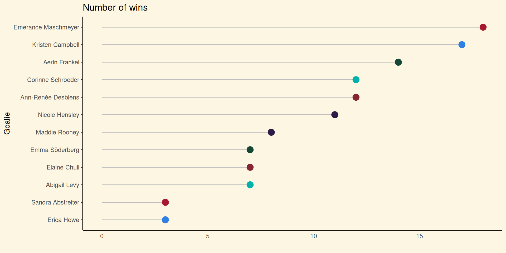
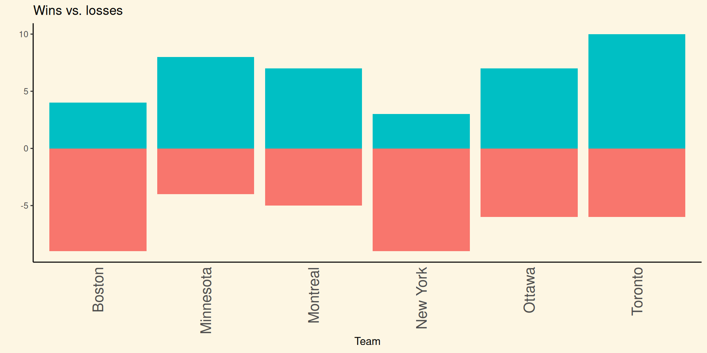
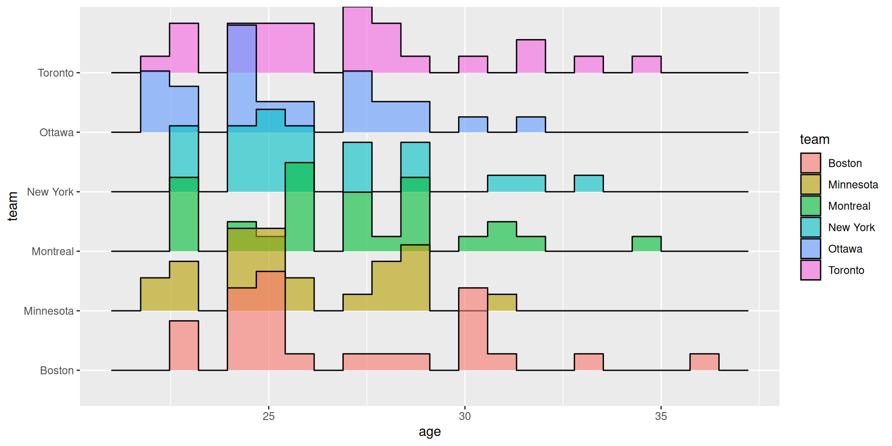

PWHL data visualizations
2024-03-22
International Women’s day
International Women’s Day takes place on March 8th, 2024. The theme for this year is “Invest in women: Accelerate progress”.
More information can be found here.
Investing in women
The data challenge put forth by the RLadies Ottawa branch is to analyze investing in women.1
So what came to mind when I thought about investing in women?
Professional Women’s Hockey League (PWHL)
PWHL is a professional women’s ice hockey league that began in January 2024. This league consists of 6 teams, 3 from Canada and the U.S. respectively:
- Montreal
- Ottawa
- Toronto
- Boston
- Minnesota
- New York
What does this have to do with investing in women?
Typically women’s sports don’t have the same kind of reception as men’s sports–which sucks a lot. i.e, women’s sports don’t get as much screen time1 and they don’t get paid as much as their male counterparts2
Now the good news …
However, things are starting to look up. In 2022, women’s sports media coverage tripled (from 5.7% to 15%) from 2019.1
The PWHL is far from the first professional women’s sport league but we’re seeing a lot of positive reception from this emerging league, such as the sold out openers in Ottawa, Montreal, and Toronto.2 Not only that but the PWHL broke the all-time attendance record for women’s hockey.3 News like this indicate the demand for women’s sports.
The PWHL is just one slice in the big sports picture but if we continue to give opportunities for professional women’s sports league then we give them the opportunities to succeed and thrive.
In sum, when we invest in women’s professional sports we invest in women!
The data visualizations
So let’s get onto some fun data visualizations about the PHWL.
These data was run March 22, 2024.
Horizontal bar chart
ggridges

Lollipop
Mirrored histogram
Looking at the code
Let’s take my favourite visualization again

Let’s break it down
I used the fastRhockey package to return PWHL data on players from each team. Admittedly, the data behind this data visualization is kind of boring but it’s a pretty plot. I found this chart here.
This plot shows the age distribution by team using the ggridges package and the function geom_density_ridges.
Here are the building phases of this plot.
- Setting up the shape
- Adding our details
players %>%
ggplot(aes(x = age, y = team, fill = team)) +
geom_density_ridges(alpha = 0.6, stat = "binline", bins = 8) +
theme_ridges() +
theme(
legend.position = "none",
panel.grid.major.x = element_blank(),
panel.border = element_blank(),
axis.ticks.x = element_blank(),
panel.background = element_rect(fill = "#fdf6e3"),
plot.background = element_rect(fill = "#fdf6e3", color = NA),
panel.grid.major = element_blank(),
panel.grid.minor = element_blank(),
legend.background = element_rect(fill = "#fdf6e3"),
legend.box.background = element_rect(fill = "#fdf6e3")
)- Adding the labels
players %>%
ggplot(aes(x = age, y = team, fill = team)) +
geom_density_ridges(alpha = 0.6, stat = "binline", bins = 8) +
theme_ridges() +
theme(
legend.position = "none",
panel.grid.major.x = element_blank(),
panel.border = element_blank(),
axis.ticks.x = element_blank(),
panel.background = element_rect(fill = "#fdf6e3"),
plot.background = element_rect(fill = "#fdf6e3", color = NA),
panel.grid.major = element_blank(),
panel.grid.minor = element_blank(),
legend.background = element_rect(fill = "#fdf6e3"),
legend.box.background = element_rect(fill = "#fdf6e3")
) +
labs(
title = "Distribution of ages by team",
x = "Age",
y = "Team"
)Let’s look it again with the outputs
Using a template
Customizing the plot
This looked kind of weird so I ended up playing with the bin size and found that 8 was my Goldilocks number. 7 was too dense and 9 was too sparse.
Nailing down the aesthetics and labels
It’s the little things now. The plots stand out from the slides because of the white background so I want to make the background the same to have a seamless look. And we want to make sure that a read can understand what the plot is trying to convey so we want to appropriately name the labels.
players %>%
ggplot(aes(x = age, y = team, fill = team)) +
geom_density_ridges(alpha = 0.6, stat = "binline", bins = 8) +
theme_ridges() +
theme(
legend.position = "none",
panel.grid.major.x = element_blank(),
panel.border = element_blank(),
axis.ticks.x = element_blank(),
panel.background = element_rect(fill = "#fdf6e3"),
plot.background = element_rect(fill = "#fdf6e3", color = NA),
panel.grid.major = element_blank(),
panel.grid.minor = element_blank(),
legend.background = element_rect(fill = "#fdf6e3"),
legend.box.background = element_rect(fill = "#fdf6e3")
) +
labs(
title = "Distribution of ages by team",
x = "Age",
y = "Team"
)Final output
The end
Thanks for looking at my plots and hopefully you’re inspired to make your own pretty plots!
Resources
- fastRhockey
- Authors: Ben Howell and Saiem Gilani
- Description: The SportsDataverse’s R Package for Hockey Data
- URL: https://fastRhockey.sportsdataverse.org/
- Hex colour codes for PWHL teams
RLadies 2024 IWD data visualization submission